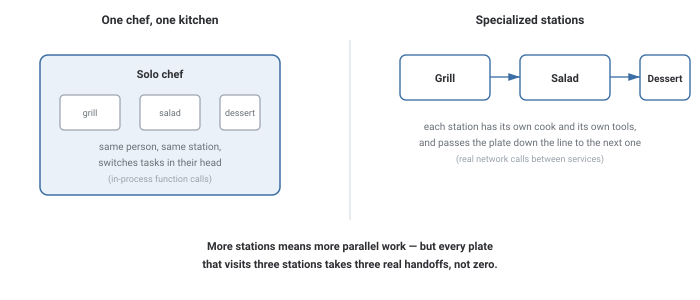
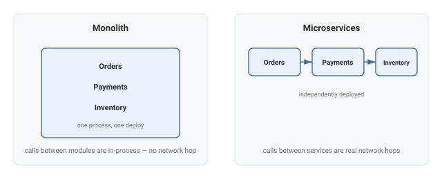
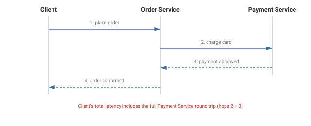

Microservices
What changes when a monolith's in-process function calls become real network calls between independently deployed services.
In Plain English
Compare a single chef running one kitchen versus a restaurant with specialized stations.

One chef doing everything in their head never has to "hand off" anything — it's instant. Separate stations are more specialized and can each get faster at their one job, but now the plate has to physically travel between them.
Every station a plate visits adds real time — that's cascading latency. And if the dessert station is slammed, the whole plate waits, no matter how fast the grill and salad stations were.
Theory & Diagrams
What a microservice is
A small, independently deployable service that owns one piece of the business (orders, payments, inventory) and talks to other services over the network — usually HTTP or gRPC. No shared codebase or database with other services; that separation is the whole point.

Cascading latency
When one service's handler calls another service to finish the work, the caller's total latency includes its own processing plus the callee's full round trip. Chain enough services together and a single request waits on several sequential network hops.

API gateways
Rather than have every client know the address of every microservice, an API gateway sits in front of all of them as a single entry point, routing each request to the right backend and often handling auth, rate limiting, and logging in one place.
Trade-offs
- Different parts of the system need to scale, deploy, or be owned independently.
- The team is large enough that one shared codebase is actively slowing everyone down.
- The team is small and the operational overhead of many services isn't worth it yet.
- Request paths are latency-sensitive and can't absorb extra network hops.
What interviewers are listening for: that microservices aren't free scalability — they trade a monolith's simplicity for real network latency and operational overhead — and being able to explain concretely how a chain of service calls accumulates latency hop by hop.
If you're a fresher: knowing that a microservice call is a real network call (not a free function call), and that this adds real latency and a real chance of failure, is the core idea interviewers check for.
If you're ~3 years in: be ready to describe a real service boundary you worked with — what it owned, what it called, and a time a downstream service's slowness or downtime became your problem too.
Real-World Examples
- Amazon — split its monolith into hundreds of independently deployable services, each owned by a small team, communicating over well-defined APIs.
- Netflix — separate services for recommendations, playback, and billing, fronted by an API gateway (Zuul).
- Uber — decomposed its original monolith into thousands of microservices as it scaled, handling trips, payments, and maps as separate systems.
- API gateways in practice — Kong, AWS API Gateway, and Netflix's Zuul all route client requests to the right backend microservice.
Interview Questions
Click a question to reveal the answer.
What's the core difference between a monolith and microservices?
A monolith is one deployable unit where modules call each other in-process. Microservices split those modules into independently deployable services that call each other over the network — real latency and real failure modes an in-process call never has.
Why does cascading latency matter in a microservices chain?
If service A calls service B to complete a request, A's total response time includes B's full round trip on top of A's own processing. Chain several services together and a request waits on multiple sequential network hops.
What does an API gateway do?
It's a single entry point in front of all the backend microservices, routing each request to the right service and often handling authentication, rate limiting, and logging in one place instead of duplicating them in every service.
What's a real cost of splitting a monolith into microservices?
Operational complexity — instead of deploying and monitoring one thing, there are now many services to deploy, version, and keep API-compatible, and debugging a single user request often means tracing it across several services.
Code & Output
An Order Service and a Payment Service, each a real socket server. A client sends "place order" to the Order Service, which then makes a genuine network call to the Payment Service before replying — the "payment hop" time below is measured from inside that real second call, not estimated.